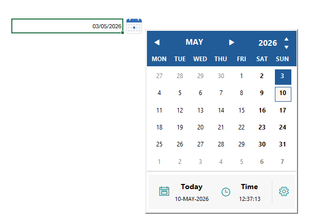
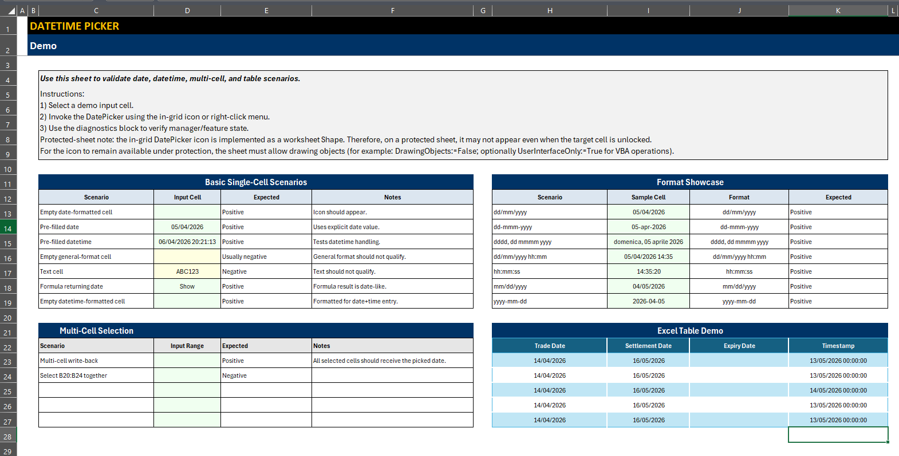
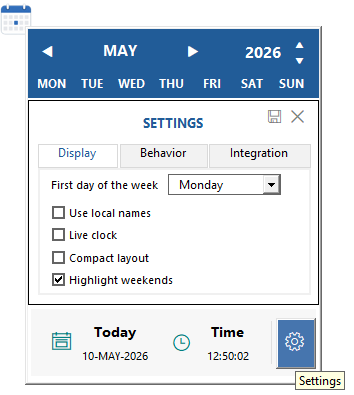

Dates without the typing.
Navigate months and years, choose Today or Now, and use keyboard navigation. The modeless form leaves Excel available while it is open.
Built for Excel. Written in VBA.
Give your workbook a calendar. Pick a date, add a time, and keep working in Excel with a modeless picker that fits your workflow.

Designed for everyday date entry, with the controls and integration options a reusable VBA component needs.
Navigate months and years, choose Today or Now, and use keyboard navigation. The modeless form leaves Excel available while it is open.
Offer a right-click entry, an in-grid icon, an optional keyboard shortcut, or a Ribbon button. Configure the access paths that suit your workbook.
Calendar selection writes to the selected cell by default, including in Excel Tables. Formulas are preserved by default; whole-column filling is an explicit operation.
Explore the actual interface: date selection, month and year navigation, settings, and the demo worksheet.


Your workbook. Your source.
Embed the reviewed VBA source so the picker travels with your workbook. Prefer an add-in? Published releases also offer a convenient .xlam option.
Choose the demo workbook or add-in from the latest release. Read its notes and requirements before opening.
Browse release assets ↗Follow the full import list, compile the project, and add lifecycle calls to ThisWorkbook.
Option Explicit
' After importing the required source files:
Private Sub Workbook_Open()
DP_Start
End Sub
Private Sub Workbook_BeforeClose(Cancel As Boolean)
DP_Stop
End Sub
' Open the picker from your own macro:
' DP_ShowA lifecycle example, not the complete installation. Import all files listed in the guide, including the currently required demo modules. Keep the form’s .frm and .frx files together.
Designed for controlled Excel environments. Requires desktop Excel for Windows and permitted VBA macros. The code supports 32-bit and 64-bit Office; consult release evidence for tested configurations. Review the source, follow your organization’s macro policy, and use one participating current-version provider per Excel process.
No add-in installation is needed when you embed the source in the workbook. The workbook must be macro-enabled, the required Microsoft Forms support must be available, and your Excel macro policy must allow it to run. The optional .xlam is a separate deployment choice.
The documented support baseline is desktop Microsoft Excel for Windows. This website presents the VBA component; the picker itself runs in Excel. Excel for the web and Excel for Mac are outside that support baseline.
Normal calendar selection, Today, and Now use the selected-cell default. Filling a Table data column requires the explicit DP_FillTableColumn operation, which returns a structured write result.
Use the README’s public API reference, the Wiki, and the release notes. The latest-release download link follows the published release; the main branch may contain unreleased work.
Yes. The project is available under the Apache License 2.0. You can inspect and adapt the source, subject to the license’s terms, including keeping its NOTICE when you redistribute it.
Explore the source, try the demo, or help improve the project.